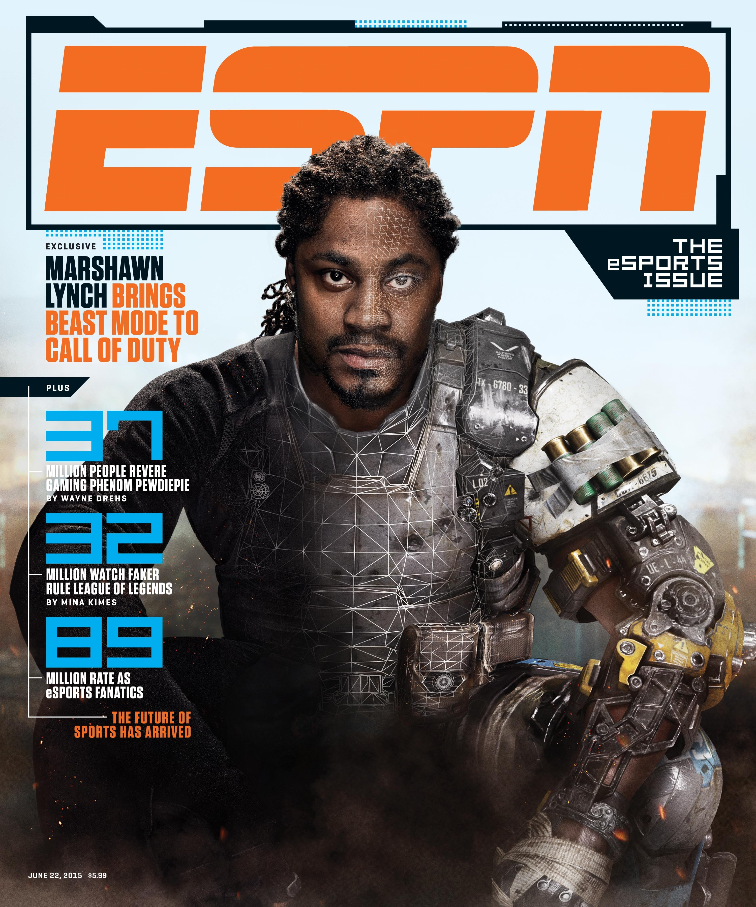

Are eSports Considered a 'Real Sport'?

eSports took a huge step toward mainstream coverage in July when ESPN broadcast The International 4, the world championship of the popular computer game Dota 2. TI4, which sold out the KeyArena in Seattle, even made the front page of ESPN.com. It may come as a bit of a surprise, then, that ESPN president John Skipper dismissed eSports as a whole during a media conference in New York. Skipper was asked about Amazon's nearly $1 billion purchase of the video game streaming platform Twitch, which as of now is the site most viewers use to watch professionals play games like League of Legends and Dota 2.
"It's not a sport - it's a competition. Chess is a competition. Checkers is a competition. Mostly, I'm interested in doing real sports."
Skipper's rationale that the professional play of video games is a mere competition may have held up 15 years ago, but there are eSports that mirror "real sports" in nearly every single way in today.
Take League of Legends, for example. In the United States, Riot Games runs an 8-team league that plays 28-game seasons before moving onto an NBA-style playoff. The worst teams in the league can be relegated, much like teams in the English Premier League. Players swap teams (and can be traded) in the offseason just like in any other sport. At the end of the year, the best teams from each region in the world will meet for a championship final similar to the World Cup. eSports teams have fanbases and rivalries just like any "real sports" teams, and hundreds of thousands of people watch Riot's League Championship Series every week.
Even if Skipper isn't willing to call eSports a "sport," it would be silly for ESPN to dismiss them from a business perspective. More people watched the League of Legends Season 3 final than the NBA Finals or the World Series. eSports is exploding in popularity, and it only makes sense for ESPN to adapt and welcome eSports to the family.